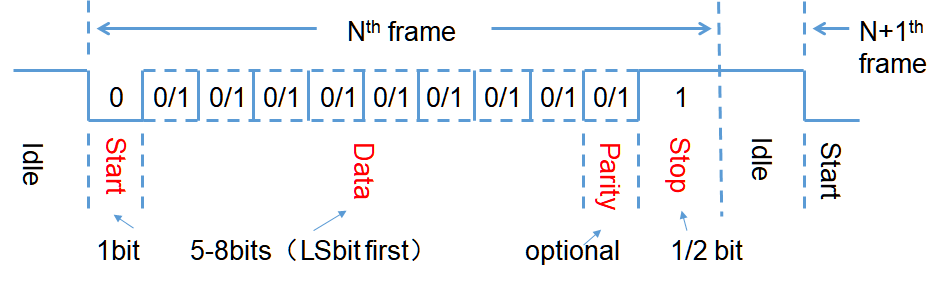
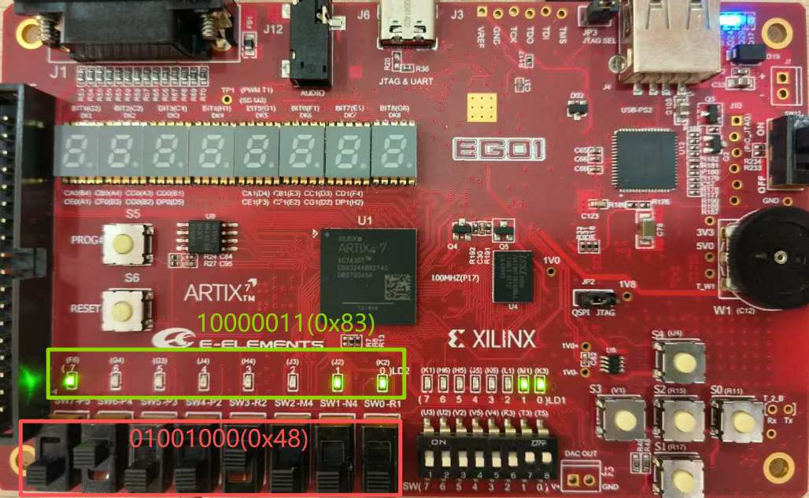
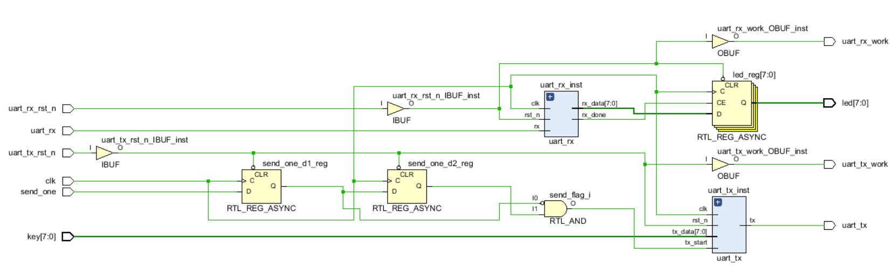
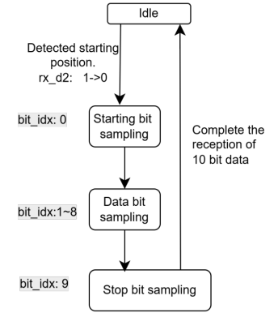
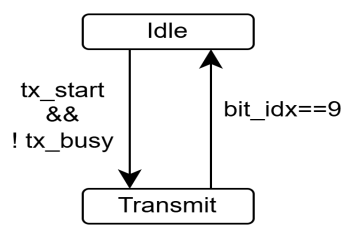
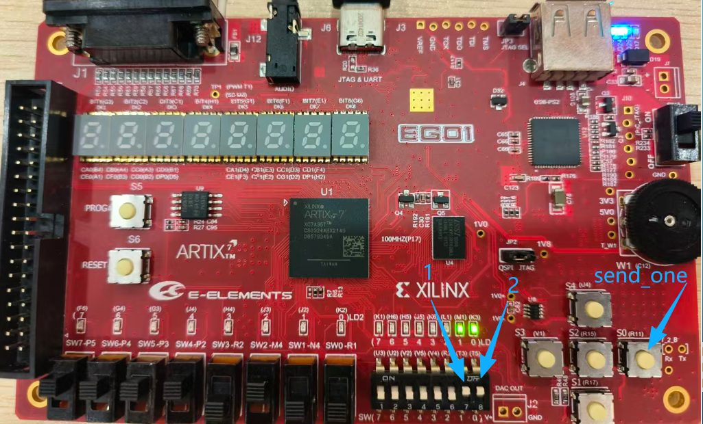
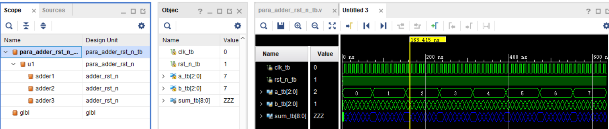
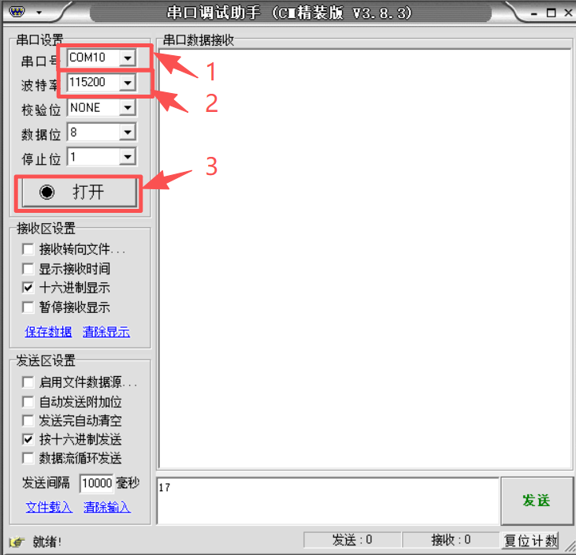
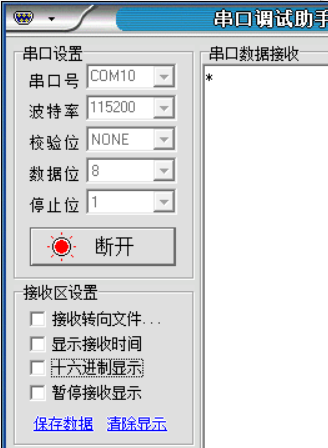

- Digital Logic: UART Serial Communication and Simulation Debugging
Digital Logic: UART Serial Communication and Simulation Debugging
Lab Objectives
- Understand the basic principles of UART asynchronous serial communication and the
8N1data frame format - Learn how to calculate the baud-rate divider and how to use the Verilog module parameter
parameter - Implement UART transmitter and receiver modules in Verilog
- Establish bidirectional communication between the EGO1 board and a serial terminal on a computer
- Learn the basic method of locating problems using the Vivado Waveform window and internal signals
1. UART Basics
1.1 What Is UART?
UART (Universal Asynchronous Receiver/Transmitter) is a commonly used serial communication interface.
Unlike synchronous communication, UART does not transmit a clock signal. The transmitter and receiver must agree in advance on the same baud rate and frame format, and then transmit and sample data at the agreed timing intervals.
Full-duplex UART communication typically requires only three wires:
| Signal | Direction | Function |
|---|---|---|
TX |
Transmitter output | Serial data transmission |
RX |
Receiver input | Serial data reception |
GND |
Common ground | Provides a common voltage reference |
When connecting two devices, the data lines should be crossed: the TX of one device connects to the RX of the other, and the two devices must share a common ground.
1.2 UART Data Frame
The UART data line remains high when idle. A transmission consists of a start bit, data bits, an optional parity bit, and stop bit(s).

This lab uses 115200-8-N-1 throughout:
| Configuration | Setting in This Lab | Description |
|---|---|---|
| Baud rate | 115200 |
Transmits 115200 symbols per second |
| Data bits | 8 |
Transfers 1 byte per frame (LSB first) |
| Parity | None |
No parity bit |
| Stop bits | 1 |
Uses one high-level stop bit |
The transmission order of one frame is:
- Idle state:
1 - Start bit:
0 - 8 data bits: from the least significant bit (
LSB) to the most significant bit (MSB) - Stop bit:
1
For example, when transmitting 8'h53, the binary value is 0101_0011. UART transmits the data bits LSB first, so the bits on the line are sent in the order 1, 1, 0, 0, 1, 0, 1, 0.
1.3 Baud-Rate Divider
The FPGA uses a 100 MHz system clock, while each UART bit must remain stable for one baud period. A divider counter is used in the design to generate the sampling or shifting instants:
localparam BAUD_DIV = CLK_FREQ / BAUD_RATE;
In this lab:
BAUD_DIV = 100_000_000 / 115_200 = 868 (integer division)
Therefore, each UART bit lasts for approximately 868 system clock cycles. The actual baud rate is approximately 100_000_000 / 868 = 115207.37, corresponding to an error of about 0.0064% from the target value, which is sufficiently small for normal communication.
1.4 Improving Module Reusability with Parameters
A parameter is a compile-time constant. By defining the clock frequency and baud rate as parameters, the same UART module can be reused with different clock frequencies and communication rates:
module uart_tx #(
parameter CLK_FREQ = 100_000_000,
parameter BAUD_RATE = 115200
)(
// Port definitions
);
The parameters can be overridden when the module is instantiated in the top-level design:
uart_tx #(
.CLK_FREQ(100_000_000),
.BAUD_RATE(115200)
) uart_tx_inst (
// Port connections
);
2. UART Demo Functionality and Structure
2.1 Demo Functionality
After programming the UART design onto the EGO1 board, the following bidirectional communication should be supported:
- FPGA → Computer: Use the 8-bit slide switches to specify one byte. After pressing the send button, the byte is transmitted through
uart_txto the computer and displayed in the receive window of the serial terminal. - Computer → FPGA: Send one byte from the serial terminal. The FPGA receives it through
uart_rxand displays the byte using eight LEDs.

2.2 Top-Level Ports
module top(
input wire clk, // 100 MHz system clock
input wire [7:0] key, // 8-bit slide switches
input wire uart_rx, // Data sent from the computer to the FPGA
output wire uart_tx, // Data sent from the FPGA to the computer
output reg [7:0] led, // Displays the received data
input wire uart_tx_rst_n, // UART TX reset/enable, active low
input wire uart_rx_rst_n, // UART RX reset/enable, active low
input wire send_one, // Send button, active low
output wire uart_tx_work, // TX operating-status indicator
output wire uart_rx_work // RX operating-status indicator
);
| Top-Level Port | On-Board Resource | Function |
|---|---|---|
key[7:0] |
8 slide switches | Sets the byte to be transmitted |
send_one |
Push button | Triggers one transmission when pressed |
led[7:0] |
8 LEDs | Displays the byte received from the computer |
uart_tx_rst_n |
Slide switch | Enables the transmitter when set to 1 |
uart_rx_rst_n |
Slide switch | Enables the receiver when set to 1 |
uart_tx_work |
LED | Indicates whether the transmitter has been released from reset |
uart_rx_work |
LED | Indicates whether the receiver has been released from reset |
uart_tx / uart_rx |
On-board UART | Provides serial communication with the computer |
2.3 Module Organization

The system can be divided into four main parts:
uart_rx: Synchronizes and samplesuart_rx, then outputs the received byte and a completion pulse.- LED latch: Detects
rx_doneand storesrx_dataintoled. - Button edge detector: Converts one button press into a single-clock-cycle
send_flag. uart_tx: After receivingsend_flag, serially transmits the slide-switch data to the computer.
3. UART Receiver Module
3.1 Receive Process

The receiver operates as follows:
- Use two registers,
rx_d1andrx_d2, to synchronize the asynchronous input into the system clock domain and reduce the risk of metastability propagation. - While idle, wait for
rx_d2to transition from high to low, indicating the detection of a start bit. - Wait for approximately half a baud period to align the sampling point with the middle of the start bit.
- Sample one bit every baud period thereafter.
- Store the eight data bits in LSB-first order.
- At the stop-bit sampling instant, update
rx_dataand generate a one-clock-cyclerx_donepulse.
3.2 Receiver Module Code
`timescale 1ns / 1ps
module uart_rx #(
parameter CLK_FREQ = 100_000_000,
parameter BAUD_RATE = 115200
)(
input wire clk,
input wire rst_n,
input wire rx, // Serial input signal
output reg [7:0] rx_data, // Received byte
output reg rx_done // Receive-complete pulse
);
localparam BAUD_DIV = CLK_FREQ / BAUD_RATE;
reg [15:0] baud_cnt;
reg [3:0] bit_idx;
reg [9:0] rx_shift;
reg rx_busy;
reg rx_d1, rx_d2;
// Two-stage synchronization to reduce the risk of metastability
// caused by the asynchronous input
always @(posedge clk) begin
rx_d1 <= rx;
rx_d2 <= rx_d1;
end
always @(posedge clk or negedge rst_n) begin
if (!rst_n) begin
baud_cnt <= 16'd0;
bit_idx <= 4'd0;
rx_busy <= 1'b0;
rx_done <= 1'b0;
rx_data <= 8'b0;
end else begin
// Deassert by default so that rx_done remains high
// for only one clock cycle
rx_done <= 1'b0;
if (!rx_busy) begin
if (rx_d2 == 1'b0) begin
// Start bit detected; first align to its midpoint
rx_busy <= 1'b1;
baud_cnt <= BAUD_DIV / 2;
bit_idx <= 4'd0;
end
end else begin
if (baud_cnt == BAUD_DIV - 1) begin
baud_cnt <= 16'd0;
bit_idx <= bit_idx + 1'b1;
case (bit_idx)
4'd0: ; // Start-bit sampling instant
4'd1, 4'd2, 4'd3, 4'd4,
4'd5, 4'd6, 4'd7, 4'd8:
rx_shift[bit_idx-1] <= rx_d2;
4'd9: begin
// Stop-bit sampling instant
rx_busy <= 1'b0;
rx_data <= rx_shift[7:0];
rx_done <= 1'b1;
end
default: ;
endcase
end else begin
baud_cnt <= baud_cnt + 1'b1;
end
end
end
end
endmodule
Note: The code in this lab is intended to demonstrate the basic receive process. It does not implement oversampling, start-bit revalidation, stop-bit validity checking, or error flags. High-reliability UART implementations used in engineering systems typically add these features.
4. UART Transmitter Module
4.1 Transmit Process

The transmitter has two main operating states:
- Idle:
tx_busy = 0; the serial line remains high while waiting fortx_start. - Transmit:
tx_busy = 1; the least significant bit of the shift register is transmitted once per baud period.
When a valid tx_start is received, the complete 10-bit UART frame is loaded into the shift register:
tx_shift <= {1'b1, tx_data, 1'b0};
From right to left, the fields are the start bit, eight data bits, and the stop bit. During transmission, tx_shift[0] is output and the shift register is then shifted right by one bit.
4.2 Transmitter Module Code
`timescale 1ns / 1ps
module uart_tx #(
parameter CLK_FREQ = 100_000_000,
parameter BAUD_RATE = 115200
)(
input wire clk,
input wire rst_n,
input wire tx_start, // One-clock-cycle transmit trigger
input wire [7:0] tx_data, // Byte to be transmitted
output reg tx, // Serial output
output reg tx_busy // Transmitter busy flag
);
localparam BAUD_DIV = CLK_FREQ / BAUD_RATE;
reg [15:0] baud_cnt;
reg [3:0] bit_idx;
reg [9:0] tx_shift;
always @(posedge clk or negedge rst_n) begin
if (!rst_n) begin
baud_cnt <= 16'd0;
bit_idx <= 4'd0;
tx_shift <= 10'b11_1111_1111;
tx <= 1'b1;
tx_busy <= 1'b0;
end else begin
if (tx_start && !tx_busy) begin
// Stop bit + 8 data bits + start bit
tx_shift <= {1'b1, tx_data, 1'b0};
tx_busy <= 1'b1;
baud_cnt <= 16'd0;
bit_idx <= 4'd0;
end else if (tx_busy) begin
if (baud_cnt < BAUD_DIV - 1) begin
baud_cnt <= baud_cnt + 1'b1;
end else begin
baud_cnt <= 16'd0;
tx <= tx_shift[0];
tx_shift <= {1'b1, tx_shift[9:1]};
bit_idx <= bit_idx + 1'b1;
if (bit_idx == 4'd9)
tx_busy <= 1'b0;
end
end
end
end
endmodule
Note: When
tx_busy = 1, a newtx_startis not accepted. The top-level control logic should wait until the current transmission has completed before initiating the next one.
5. Top-Level Module Design
5.1 Send-Button Edge Detection
The EGO1 push button used in this lab is active low: it is 1 when released and changes to 0 when pressed. The following logic detects the falling edge and generates a one-clock-cycle send_flag:
reg send_one_d1, send_one_d2;
always @(posedge clk or negedge uart_tx_rst_n) begin
if (!uart_tx_rst_n) begin
send_one_d1 <= 1'b0;
send_one_d2 <= 1'b0;
end else begin
send_one_d1 <= send_one;
send_one_d2 <= send_one_d1;
end
end
wire send_flag;
assign send_flag = ~send_one_d1 & send_one_d2;
When this expression is true, the current sampled value is 0 and the previous sampled value is 1, indicating that a button press has been detected.
This demo does not include button debouncing. If one button press causes multiple transmissions, reuse the btn_debounce module from Lab 7 and perform edge detection after debouncing.
5.2 Complete Top-Level Code
`timescale 1ns / 1ps
module top(
input wire clk,
input wire [7:0] key,
input wire uart_rx,
output wire uart_tx,
output reg [7:0] led,
input wire uart_tx_rst_n,
input wire uart_rx_rst_n,
input wire send_one,
output wire uart_tx_work,
output wire uart_rx_work
);
// UART RX outputs
wire [7:0] rx_data;
wire rx_done;
// UART TX status
wire tx_busy;
assign uart_tx_work = uart_tx_rst_n;
assign uart_rx_work = uart_rx_rst_n;
uart_rx #(
.CLK_FREQ(100_000_000),
.BAUD_RATE(115200)
) uart_rx_inst (
.clk(clk),
.rst_n(uart_rx_rst_n),
.rx(uart_rx),
.rx_data(rx_data),
.rx_done(rx_done)
);
// Falling-edge detection for the active-low push button
reg send_one_d1, send_one_d2;
always @(posedge clk or negedge uart_tx_rst_n) begin
if (!uart_tx_rst_n) begin
send_one_d1 <= 1'b0;
send_one_d2 <= 1'b0;
end else begin
send_one_d1 <= send_one;
send_one_d2 <= send_one_d1;
end
end
wire send_flag;
assign send_flag = ~send_one_d1 & send_one_d2;
uart_tx #(
.CLK_FREQ(100_000_000),
.BAUD_RATE(115200)
) uart_tx_inst (
.clk(clk),
.rst_n(uart_tx_rst_n),
.tx_start(send_flag),
.tx_data(key),
.tx(uart_tx),
.tx_busy(tx_busy)
);
// Latch the received data when reception completes.
// The LEDs keep displaying the most recently received byte.
always @(posedge clk or negedge uart_rx_rst_n) begin
if (!uart_rx_rst_n)
led <= 8'b0;
else if (rx_done)
led <= rx_data;
end
endmodule
6. Pin Constraints

Save the following constraints as top.xdc. The port names must exactly match those in the top-level module.
## LED[7:0]
set_property IOSTANDARD LVCMOS33 [get_ports {led[7]}]
set_property IOSTANDARD LVCMOS33 [get_ports {led[6]}]
set_property IOSTANDARD LVCMOS33 [get_ports {led[5]}]
set_property IOSTANDARD LVCMOS33 [get_ports {led[4]}]
set_property IOSTANDARD LVCMOS33 [get_ports {led[3]}]
set_property IOSTANDARD LVCMOS33 [get_ports {led[2]}]
set_property IOSTANDARD LVCMOS33 [get_ports {led[1]}]
set_property IOSTANDARD LVCMOS33 [get_ports {led[0]}]
set_property PACKAGE_PIN F6 [get_ports {led[7]}]
set_property PACKAGE_PIN G4 [get_ports {led[6]}]
set_property PACKAGE_PIN G3 [get_ports {led[5]}]
set_property PACKAGE_PIN J4 [get_ports {led[4]}]
set_property PACKAGE_PIN H4 [get_ports {led[3]}]
set_property PACKAGE_PIN J3 [get_ports {led[2]}]
set_property PACKAGE_PIN J2 [get_ports {led[1]}]
set_property PACKAGE_PIN K2 [get_ports {led[0]}]
## Slide switches key[7:0]
set_property IOSTANDARD LVCMOS33 [get_ports {key[7]}]
set_property IOSTANDARD LVCMOS33 [get_ports {key[6]}]
set_property IOSTANDARD LVCMOS33 [get_ports {key[5]}]
set_property IOSTANDARD LVCMOS33 [get_ports {key[4]}]
set_property IOSTANDARD LVCMOS33 [get_ports {key[3]}]
set_property IOSTANDARD LVCMOS33 [get_ports {key[2]}]
set_property IOSTANDARD LVCMOS33 [get_ports {key[1]}]
set_property IOSTANDARD LVCMOS33 [get_ports {key[0]}]
set_property PACKAGE_PIN P5 [get_ports {key[7]}]
set_property PACKAGE_PIN P4 [get_ports {key[6]}]
set_property PACKAGE_PIN P3 [get_ports {key[5]}]
set_property PACKAGE_PIN P2 [get_ports {key[4]}]
set_property PACKAGE_PIN R2 [get_ports {key[3]}]
set_property PACKAGE_PIN M4 [get_ports {key[2]}]
set_property PACKAGE_PIN N4 [get_ports {key[1]}]
set_property PACKAGE_PIN R1 [get_ports {key[0]}]
## System clock and push button
set_property IOSTANDARD LVCMOS33 [get_ports clk]
set_property IOSTANDARD LVCMOS33 [get_ports send_one]
set_property PACKAGE_PIN P17 [get_ports clk]
set_property PACKAGE_PIN R11 [get_ports send_one]
## UART TX/RX reset switches and status LEDs
set_property IOSTANDARD LVCMOS33 [get_ports uart_tx_rst_n]
set_property IOSTANDARD LVCMOS33 [get_ports uart_rx_rst_n]
set_property IOSTANDARD LVCMOS33 [get_ports uart_tx_work]
set_property IOSTANDARD LVCMOS33 [get_ports uart_rx_work]
set_property PACKAGE_PIN T3 [get_ports uart_tx_rst_n]
set_property PACKAGE_PIN T5 [get_ports uart_rx_rst_n]
set_property PACKAGE_PIN M1 [get_ports uart_tx_work]
set_property PACKAGE_PIN K3 [get_ports uart_rx_work]
## On-board UART
set_property IOSTANDARD LVCMOS33 [get_ports uart_tx]
set_property IOSTANDARD LVCMOS33 [get_ports uart_rx]
set_property PACKAGE_PIN T4 [get_ports uart_tx]
set_property PACKAGE_PIN N5 [get_ports uart_rx]
7. UART Loopback Simulation
Before testing on the board, directly connect the output of uart_tx to the input of uart_rx and perform a loopback test in the testbench. This allows the transmit frame format, receive sampling, and completion pulse to be verified simultaneously.
To reduce simulation time, the testbench temporarily increases the baud rate to 1 MHz. The transmitter and receiver only need to use the same parameters. The design should still use 115200 baud when synthesized and programmed onto the board.
7.1 Testbench
`timescale 1ns / 1ps
module tb_uart_loopback;
localparam CLK_FREQ = 100_000_000;
localparam BAUD_RATE = 1_000_000; // Used only to speed up simulation
reg clk = 1'b0;
reg rst_n = 1'b0;
reg tx_start = 1'b0;
reg [7:0] tx_data = 8'h00;
wire uart_line;
wire tx_busy;
wire [7:0] rx_data;
wire rx_done;
always #5 clk = ~clk; // 100 MHz
uart_tx #(
.CLK_FREQ(CLK_FREQ),
.BAUD_RATE(BAUD_RATE)
) u_tx (
.clk(clk),
.rst_n(rst_n),
.tx_start(tx_start),
.tx_data(tx_data),
.tx(uart_line),
.tx_busy(tx_busy)
);
uart_rx #(
.CLK_FREQ(CLK_FREQ),
.BAUD_RATE(BAUD_RATE)
) u_rx (
.clk(clk),
.rst_n(rst_n),
.rx(uart_line),
.rx_data(rx_data),
.rx_done(rx_done)
);
task send_byte;
input [7:0] data;
begin
wait (!tx_busy);
@(posedge clk);
tx_data <= data;
tx_start <= 1'b1;
@(posedge clk);
tx_start <= 1'b0;
@(posedge rx_done);
if (rx_data !== data) begin
$display("ERROR: expected %02h, received %02h", data, rx_data);
$fatal;
end
$display("PASS: sent %02h, received %02h", data, rx_data);
end
endtask
initial begin
#100;
rst_n = 1'b1;
send_byte(8'h48);
send_byte(8'h83);
send_byte(8'h2A);
#1000;
$finish;
end
endmodule
7.2 Simulation Checkpoints
After running the simulation, verify the following:
tx_startremains asserted for only one system clock cycle.tx_busyremains high throughout the complete 10-bit data frame.uart_lineis high while idle, followed by the start bit, eight data bits, and the stop bit in sequence.rx_doneis asserted for only one system clock cycle when each byte has been completely received.rx_datareceives8'h48,8'h83, and8'h2Ain sequence.
When tested with the provided uart_tx.v and uart_rx.v, this testbench should produce the following output:
PASS: sent 48, received 48
PASS: sent 83, received 83
PASS: sent 2a, received 2a
7.3 Adding Internal Signals in Vivado

Three commonly used windows in the Vivado simulation interface are:
| Window | Function |
|---|---|
| Scope | Selects the testbench, DUT, and submodule instances |
| Objects | Displays ports and internal signals of the selected instance |
| Waveform | Displays signal values over time |
During debugging, first select u_tx or u_rx in the Scope window. Then add internal signals such as baud_cnt, bit_idx, tx_shift, rx_shift, tx_busy, and rx_busy from the Objects window to the Waveform window. Rerun the simulation and trace the problem starting from the first signal that does not behave as expected.
8. On-Board Testing
8.1 Preparation
- Add
uart_rx.v,uart_tx.v,top.v, andtop.xdcto the Vivado project. - Set
topas the top-level module. - Run synthesis and implementation, and then generate the bitstream.
- Connect the EGO1 JTAG & UART interface to the computer using a USB cable.
- Program the bitstream onto the FPGA.
- Set the switches corresponding to
uart_tx_rst_nanduart_rx_rst_nto 1 so that the transmitter and receiver are released from reset.
8.2 Serial Terminal Settings

Select the serial port corresponding to the EGO1 board and configure:
- Baud rate:
115200 - Parity:
None - Data bits:
8 - Stop bits:
1 - When testing binary bytes, enable Hexadecimal Display and Send as Hexadecimal
Then click Open. If you cannot determine the correct serial port, open Windows Device Manager and identify the new COM port that appears after connecting the development board.
8.3 FPGA → Computer
Set the slide switches according to the following table, then press send_one once:
Slide Switches key[7:0] |
Hexadecimal | Expected Result in the Serial Receive Window |
|---|---|---|
0100_1000 |
0x48 |
48 |
1111_0100 |
0xF4 |
F4 |
0010_1010 |
0x2A |
Hexadecimal mode displays 2A; text mode displays * |
8.4 Computer → FPGA
Enter hexadecimal data in the serial transmit window and click Send:
| Transmitted Data | Expected LED led[7:0] State |
|---|---|
83 |
1000_0011 |
17 |
0001_0111 |
The LEDs continue to display the most recently received byte until another byte is received or the receiver is reset.
8.5 ASCII Character Test
The ASCII code for the character * is 8'h2A, whose binary representation is 0010_1010. Set the slide switches to this value and press the send button. With hexadecimal display disabled in the serial terminal, the character * should be displayed.

9. Lab Tasks for This Week
Task 1: Complete the UART Demo
- Create a Vivado project and add three Verilog files and one XDC file.
- Complete the UART loopback simulation and confirm that all three test values are received correctly.
- Generate the bitstream and program it onto the EGO1 board.
- Complete bidirectional communication from FPGA → computer and computer → FPGA.
Task 2: Transmit the ASCII Character *
- Look up or calculate the ASCII code of the character
*. - Use the slide switches to set the corresponding 8-bit value.
- Press the send button.
- Observe the character
*in the text-display mode of the serial terminal.
Task 3: Simulation Debugging Record
Add at least the following signals to the Waveform window and capture a screenshot of one complete data frame:
uart_lineu_tx.tx_busyu_tx.bit_idxu_rx.rx_busyu_rx.bit_idxrx_donerx_data
Identify the time intervals corresponding to the start bit, data bits, and stop bit in the waveform, and explain why rx_done remains high for only one system clock cycle.
On-Board Acceptance Criteria
- After power-up and release from reset, the
uart_tx_workanduart_rx_workindicator LEDs are on. - Set the slide switches to
0100_1000; after pressing the button, the computer receives48. - Set the slide switches to
0010_1010; after pressing the button, the computer displays*in the text window. - Send
83from the computer; the LEDs display1000_0011. - Send
17from the computer; the LEDs display0001_0111. - In the loopback simulation, the transmitted value matches the received value.
- You can add internal signals in Vivado and explain one complete UART frame in the waveform.
Appendix: Common Problems
| Symptom | Possible Cause | Troubleshooting Method |
|---|---|---|
| Serial port cannot be opened | Incorrect COM port selected or the port is occupied by another program | Reconnect the development board and verify the port in Device Manager; close any software currently using the serial port |
| The computer receives garbled data | The baud rate or frame format differs between the two ends | Configure both ends as 115200-8-N-1 |
| The computer receives no data from the FPGA | The TX module is still in reset, the button does not generate a pulse, or the serial port is not open | Check uart_tx_work, send_flag, and tx_busy |
| FPGA LEDs do not update | The RX module is still in reset, the computer is using the wrong transmit mode, or the RX pin is incorrect | Check uart_rx_work, rx_done, and the XDC constraints |
| One button press causes multiple transmissions | Mechanical button bounce | Add btn_debounce before the edge detector |
| Received data is occasionally incorrect | Baud-rate error, connection problems, or unstable sampling | Check the parameters and common ground; observe rx_d2, baud_cnt, and bit_idx |
X appears in the waveform |
Registers have not been reset or the testbench stimulus is incomplete | Apply reset before starting transmission; verify that all inputs have known values |
Z appears in the waveform |
The signal is undriven or a port is not connected | Start from the top-level port and trace the module connections step by step to locate the missing driver |
Discussion Questions
- Why should the UART receiver sample each bit near the middle of the bit period rather than at the bit boundary?
- If the system clock is changed to 50 MHz, how should
BAUD_DIVchange? - Why can the current receiver module not report framing errors? What checks and output signals should be added?
- How could a FIFO be added so that the transmitter can accept multiple bytes continuously without waiting for each byte to finish transmitting?